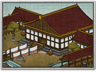

Requires
- Buildings: 
- Arts:

- Resources:

- Religions:
Basic Building Statistics (can be modified by difficulty level, arts, skills, traits and retainers)
- Cost: 6800
- +1 rank(s) for shirabyoshi recruited in this province
- Spreads influence to neighbouring provinces (+1 influence)
- +20% bonus to tax rate in this province
- Improves the spread of Fujiwara influence within the province (+5 influence)
- Enables recruitment of Rank 1 shirabyoshi
Clan Effects
- Each clan chain building enables you to sustain one additional shirabyoshi (to a maximum of 5)
- 20% reduction to administration costs
Description
Everything, even grandeur, has its seasons.
This palace increases Fujiwara family influence immensely. It also improves tax collection, and converts neighbouring provinces into supporters of the Fujiwara, if only by overwhelming them with grandeur and elegance. Additionally, shirabyoshi trained in this province are more experienced, simply because they have such a demanding audience to satisfy at the palace. Historically, the Fujiwara survived the various disturbances of the Imperial order and the Gempei War, but their influence was greatly reduced. In-fighting among the Fujiwara themselves almost certainly hadn't helped their cause. They kept some Court positions, but the rise of the Minamoto and the establishment of the Kamakura Shogunate made these positions honorary rather than useful. They did, however, indirectly get a taste of power because the fourth and fifth Kamakura Shoguns were members of the Kujo clan, a branch of the Fujiwara.